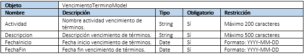
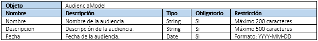
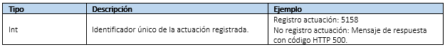
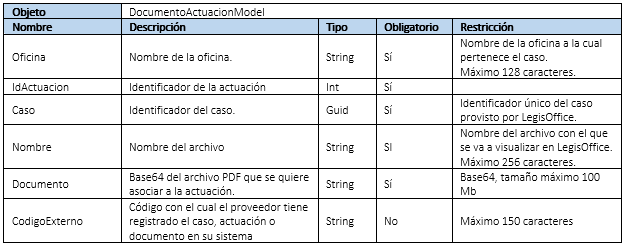
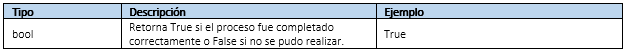
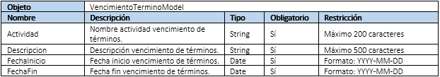
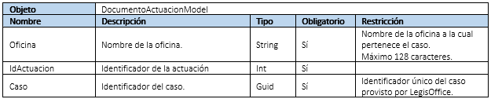

Servicio Web Api
El protocolo HTTP no sirve sólo para proveer páginas web sino también es una potente plataforma para la construcción de APIs que exponen servicios y datos. HTTP es simple, flexible y ubicuo. Casi cualquier plataforma actualmente tiene o utiliza el protocolo HTTP, por lo que los servicios HTTP pueden llegar a una amplia gama de clientes, incluyendo los navegadores, dispositivos móviles y aplicaciones de escritorio tradicionales.
Microsoft ASP.NET WebAPI es un marco para la construcción de las API web en la parte superior del marco .NET de Microsoft que permite aprovechar todo el conjunto de características presente sobre el protocolo HTTP.
El servicio WebAPI de LegisOffice utiliza esta herramienta de Microsoft WebAPI para exponer servicios a sus clientes mediante peticiones HTTP (GET, POST, PUT, DELETE) en formato JSON.
El servicio WebAPI de LegisOffice se encarga de exponer métodos generales de recepción de información de vigilancia judicial a partir de un mecanismo de autenticación basado en Usuario / Clave / Proveedor.
Para poder acceder a algún un recurso -excepto Test y ValidarCredenciales- es requerido que el cliente incluya el Token de acceso - obtenido al validar sus credenciales - en el encabezado de autorización de la petición HTTP.
A continuación, se describen a detalla los contratos expuestos en el servicio WebAPI.
URL del servicio en producción: https://vj.legisoffice.com/LOServiceVJ/. Todos los recursos están agrupados sobre el controlador llamado: VJ, la URL de consumo quedaría así: https://vj.legisoffice.com/LOServiceVJ/VJ/ + EL RECURSO SOLICITADO
Test
Método HTTP: GET Verifica si el servicio de vigilancia judicial está disponible. INFORMACIÓN SOLICITUD Parámetros URL: Ninguno
Parámetros cuerpo solicitud: Ninguno
INFORMACIÓN RESPUESTA
Tipo |
Descripcion |
Mensaje |
|---|---|---|
String |
Mensaje de conexión establecida |
Conexión |
ValidarCredenciales
Método HTTP: POST Valida las credenciales de autenticación para un proveedor y genera un identificador único de sesión
INFORMACIÓN SOLICITUD
Parámetros URL: Ninguno
Parámetros cuerpo solicitud:
Objeto |
AutenticaciónModel |
|||
|---|---|---|---|---|
Nombre |
Descripcion |
Tipo |
Obligatorio |
Restricción |
Usuario |
Nombre de Usuario |
String |
Si |
|
Clave |
Constraseña |
String |
Si |
|
Proveedor |
Nombre del proveedor |
String |
Si |
|
INFORMACIÓN RESPUESTA
Tipo |
Descripcion |
Ejemplo |
|---|---|---|
Guid |
Token: Identificador único de acceso requerido para consumir los métodos del servicio WebAPI. |
Credenciales válidas: EBA5899B-1CBA-4EAB-9C16-9C0CCD33A3FF Credenciales no válidas: mensaje de respuesta: Acceso no autorizado con código HTTP 401. |
RegistrarActuacion
Método HTTP: POST Registra la información de una actuación y retorna el identificador único de la actuación.
INFORMACIÓN SOLICITUD
Cabecera de autenticación: Authentication = Token -Espacio- Guid obtenido como respuesta al consumir el método ValidarCredenciales codificado en base64 (ISO-8859-1)
Parámetros URL: Ninguno
Parámetros cuerpo solicitud:
Objeto |
RegistrarActuacionModel |
|||
|---|---|---|---|---|
Nombre |
Descripcion |
Tipo |
Obligatorio |
Restricción |
Oficina |
Nombre de la Oficina |
String |
Si |
Nombre de la oficina a la cual pertenece el caso. Máximo 128 caracteres. |
Caso |
Identificador del caso |
Guid |
Si |
Identificador único del caso provisto por LegisOffice |
Titulo |
Título de la actuación |
String |
Si |
Máximo 200 caracteres |
Descripción |
Descripción de la actuación |
String |
Si |
Máximo 4000 caracteres |
Fecha |
Fecha de la actuación |
Date |
Si |
Formato: YYYY-MM-DD |
Radicado |
Número de radicado |
String |
Si |
Máximo 50 caracteres. |
Juzgado |
Nombre del juzgado |
String |
Si |
Máximo 1000 Caracteres |
Vencimiendo de términos |
Listado con la información de ven cimiento de términos (tipo: VencimientoTerminoModel). |
Array |
No |
|
Audiencias |
Listado con la información de audiencias (tipo: AudienciaModel). |
Array |
No |
|
Finalización Servicio |
Indica si con esta actuación se está finalizado el servicio de Vigilancia Judicial para este caso. |
Bool |
No |
|
CódigoExterno |
Código con el cual el proveedor tiene registrado el caso o actuación en su sistema |
String |
No |
Máximo 150 caracteres |
Propiedad VencimientoTerminos de tipo VencimientoTerminoModel.
Propiedad Audiencias de tipo AudienciaModel.
INFORMACIÓN RESPUESTA
RegistrarDocumentoActuacion
Método HTTP: POST Registra un documento sobre una actuación y retorna si se pudo registrar o no.
INFORMACIÓN SOLICITUD
Cabecera de autenticación: Authentication = Token -Espacio- Guid obtenido como respuesta al consumir el método ValidarCredenciales codificado en base64 (ISO-8859-1)
Parámetros URL: Ninguno
Parámetros cuerpo solicitud:
INFORMACIÓN RESPUESTA
ActualizarActuacion
Método HTTP: PUT Actualiza la información de una actuación y retorna si se pudo actualizar o no.
INFORMACIÓN SOLICITUD
Cabecera de autenticación: Authentication = Token -Espacio- Guid obtenido como respuesta al consumir el método ValidarCredenciales codificado en base64 (ISO-8859-1)
Parámetros URL: Ninguno
Parámetros cuerpo solicitud:

Propiedad VencimientoTerminos de tipo VencimientoTerminoModel.
Propiedad Audiencias de tipo AudienciaModel.

INFORMACIÓN RESPUESTA

EliminarActuacion
Método HTTP: POST Elimina una actuación y los documentos asociados a la misma. Retorna si se pudo realizar la eliminación o no.
INFORMACIÓN SOLICITUD
Cabecera de autenticación: Authentication = Token -Espacio- Guid obtenido como respuesta al consumir el método ValidarCredenciales codificado en base64 (ISO-8859-1)
Parámetros URL: Ninguno
Parámetros cuerpo solicitud:
